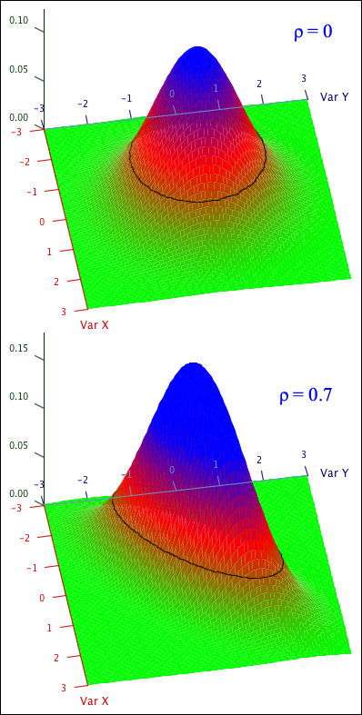

The most widely used continuous bivariate distributions are the family of bivariate normal distributions. We start with a special case, the standard bivariate normal distribution.
Definition
Two continuous random variables, \(X\) and \(Y\), are said to have a standard bivariate normal distribution with parameter \(\rho\),
\[ (X,Y) \;\;\sim\;\; \NormalDistn(0, 1, 0, 1, \rho) \]if \(-1 \lt \rho \lt 1\) and their joint pdf is
\[ f(x,y) \;\;=\;\; \frac{1}{2\pi\sqrt{1 - \rho^2}} \exp\left(-\frac{1}{2(1-\rho^2)} \left(x^2 + y^2 - 2\rho x y\right)\right) \]for all \(-\infty \lt x \lt \infty\) and \(-\infty \lt y \lt \infty\).
Two examples are shown in the joint pdfs below.

The contours are circles when \(\rho = 0\) and ellipses for non-zero values of \(\rho\).
Strength of the relationship
The value of the parameter \(\rho\) determines how strongly \(X\) and \(Y\) are related to each other.